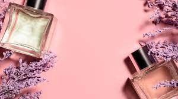

Fragrances have been adorned by people since centuries ago. Today, fragrances can be found all around, from scented candles, to all your favorite bath and body products. There are numerous reasons why people wear perfumes, but ultimately it boils down to the fact that they make us feel happy. Don't you think?
There are many different reasons as to why people wear perfume and cologne. According to Coco Chanel she believed “No elegance is possible without perfume. It is the unseen, unforgettable, ultimate accessory.”
Which scent do you find the most soothing?
The oriental fragrance family consists of rich exotic scents. When you think of oriental scents think herbs and spices or dry, powdery, resin notes. Opulent and heady, these notes are often times softened with amber or sweet notes. It's common to describe this family as exotic and seductive.
The floral scent family is one of the most common families and are used in many well-known perfumes. Floral scents are most often used in women's fragrances, although they are occasionally used in men's as well. They usually smell like fresh-cut flowers or have a powdery note to them. Floral scents are perfect for the spring and summertime.
Woody perfumes are usually warm and opulent, mixing incense-like fragrances like sandalwood and patchouli with drier notes like cedar. To tone down the warmth of these notes, fragrances will sometimes incorporate some fresh notes like citrus or floral. Notes in this family can be described as coniferous or woody and bitter.
The fresh scent family encompasses clean bright scents. Herby, citrusy and oceanic scents all fall into this category. More often used in men's fragrances than women's fragrances, fresh scents are paired with spicy notes to create a more robust fragrance. Aromatic, tart notes can also be found mixed with zesty or fruity scents.

Scents can have positive effects on mood, stress reduction, sleep enhancement, self-confidence, and physical and cognitive performance,
Is scent a memory muse? Are perfumes linked to memories?
An odor has no personal significance until it becomes connected to something that has meaning
Below are examples of the benefits of using perfumes